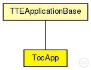

This documentation is released under the Creative Commons license
This documentation is released under the Creative Commons licenseToc(1,2) Application used for the rt_tictoc example. Receives TT messages with Tic(1,2)-Request payload and answers with RC messages with Toc(1,2)-Response payload.
Author: Till Steinbach
The following diagram shows usage relationships between types. Unresolved types are missing from the diagram. Click here to see the full picture.

The following diagram shows inheritance relationships for this type. Unresolved types are missing from the diagram. Click here to see the full picture.
| Name | Type | Description |
|---|---|---|
| TTEApplicationBase | simple module |
Abstract base application used for various application models. Since this is an abstract module please do not instantiate it |
| Name | Type | Default value | Description |
|---|---|---|---|
| buffers | string | "" |
Comma seperated list of buffer modules the application is allowed to use |
| buffers_manual | bool | false |
If true, buffer management is not used. Applications use their own methods to locate buffers |
| counter | int | 0 | |
| ct_id | int |
CT-ID used for the messages to send |
| Name | Value | Description |
|---|---|---|
| class | TocApp |
| Name | Direction | Size | Description |
|---|---|---|---|
| TTin | input |
Input gate for the incoming time-triggered messages |
|
| RCin | input |
Input gate for the incoming rate-constrained messages |
|
| schedulerIn | input |
Input gate for the incoming SchedulerActionTimeEvent messages |
|
| syncIn | input |
Input gate for the incoming SynchronizationNotification messages |
// // Toc Application used for the rt_tictoc example. // Receives TT messages with Tic-Request payload and answers // with RC messages with Toc-Response payload. // // // @see rt_tictoc, TicApp // // @author Till Steinbach simple TocApp extends TTEApplicationBase { parameters: @class(TocApp); //Counter is increased on incoming Tic messages int counter = 0; //CT-ID used for the messages to send int ct_id; }
This documentation is released under the Creative Commons license